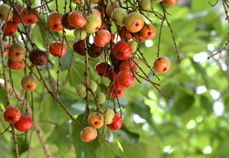

 ডুমুরের গুনাগুন
ডুমুরের পরিচিতি
ডুমুর কিন্তু মুসলিমদের কাছে কোন সাধারণ ফল নয়।আমাদের মহানবী (সঃ) এর প্রিয় ফলের
তালিকায় ছিল ডুমুর। এই ডুমুরের নামে আল কোরানের একটি সুরার নামকরণ করা হয়ে। আরবিতে
ডুমুরকে তীন বলে। কোরআনের ৯৫ নং সুরা হচ্ছে সুরা আত তীন। এই সুরার প্রথম আয়াতে আল্লাহ
পাক এই ডুমুর আর জৈতুন নিয়ে শপথ করে বলেন- وَالتِّينِ وَالزَّيْتُونِ ওয়া আল তীনি ওয়া
আল জায়তুনী, By the Fig and the Olive, শপথ, ডুমুর ও জলপাই এর।
আল্লাহ যেখানে ডুমুরের শপথ করছেন তাই এই ডুমুর কোন মামুলী ফল হতে পারেনা।
আরব দেশের কাছে ডুমুরও খাজুর রুটি দুধের মত প্রধান খাদ্য তালিকায় ছিল। আমাদের দেশে
অনেকে অনেক সময় ভাতের কসম করে থাকে, বলে যে, ভাতের কসম করে বলছি, মিথ্যা বললে ভাত খেতে
পাবনা! কারণ ভাত আমাদের প্রাণ রক্ষার প্রধান খাদ্য। এই ডুমুর শুধু কাঁচা খাওয়া নয় পাকা
ডুমুর শুকিয়ে শুটকি করেও সারা বছর খাওয়া যায়।
 ডুমুরের ফুলের ইংরেজি হচ্ছে-unseen flowers. যে ফুল দেখা যায়না। হ্যাঁ ডুমুরের ফুল দেখা
যায়না, মানে ডুমুর গাছে বিনা ফুলেই ফল আসে। যেমন কাঁঠাল গাছে বিনা ফুলে ফল আসে।
তবে অনেকে ডুমুরের ভিতরের অংশকে ফুল বলে বিবেচনা করে থাকেন। ডুমুর যার বৈজ্ঞানিক নাম
‘ফিকাস হিসপিডিয়া’। বিশ্বজুড়ে যে ডুমুর ফল হিসেবে অধিক পরিচিত তার নাম হচ্ছে ‘ফিকাস
কারিসা’।
আমাদের দেশে গ্রাম গঞ্জে এমনিতে কখনও সখনও ডুমুরের গাছের দেখা পাওয়া যায়। ফল দেখতে যেমন
সুন্দর দেখা যায়না তেমন ফল ছোট ছোট তার আবরণ পুরো শক্ত হয়ে থাকে।কাঁচা থাকতে সবুজ রঙের
হলে পাকা কালে হলুদ রঙ্গের হয়ে যায়। এই ডুমুর পাখিদের খাদ্য হলেও কেউ কেউ এই ডুমুর দিয়ে
তরকারী রান্না করে খায়। আবার কেউ কেউ ভেষজ হিসাবে ব্যবহার করে থাকেন।
ডুমুরের ফুলের ইংরেজি হচ্ছে-unseen flowers. যে ফুল দেখা যায়না। হ্যাঁ ডুমুরের ফুল দেখা
যায়না, মানে ডুমুর গাছে বিনা ফুলেই ফল আসে। যেমন কাঁঠাল গাছে বিনা ফুলে ফল আসে।
তবে অনেকে ডুমুরের ভিতরের অংশকে ফুল বলে বিবেচনা করে থাকেন। ডুমুর যার বৈজ্ঞানিক নাম
‘ফিকাস হিসপিডিয়া’। বিশ্বজুড়ে যে ডুমুর ফল হিসেবে অধিক পরিচিত তার নাম হচ্ছে ‘ফিকাস
কারিসা’।
আমাদের দেশে গ্রাম গঞ্জে এমনিতে কখনও সখনও ডুমুরের গাছের দেখা পাওয়া যায়। ফল দেখতে যেমন
সুন্দর দেখা যায়না তেমন ফল ছোট ছোট তার আবরণ পুরো শক্ত হয়ে থাকে।কাঁচা থাকতে সবুজ রঙের
হলে পাকা কালে হলুদ রঙ্গের হয়ে যায়। এই ডুমুর পাখিদের খাদ্য হলেও কেউ কেউ এই ডুমুর দিয়ে
তরকারী রান্না করে খায়। আবার কেউ কেউ ভেষজ হিসাবে ব্যবহার করে থাকেন।
ডুমুরের পুষ্টিগুন
ই ফলটি কিন্তু অত্যন্ত পুষ্টিকর বিশেষ করে এনার্জি, ক্যালসিয়াম ও আঁশে ভরপুর। যুক্তরাষ্ট্রের ‘ফুড অ্যান্ড ড্রাগ অ্যাডমিনিস্ট্রেশন’ বা ‘এফডিএ’-এর তথ্য মতে এর পুষ্টিগুণ নিম্নরূপ। শুকনো এবং রন্ধন ব্যতীত প্রতি ১০০ গ্রাম ডুমুরের প্রাপ্ত পুষ্টিগুণ। কার্বোহাইড্রেট ৬৩.৮৭ গ্রাম, শর্করা ৪৭.৯২ গ্রাম, আঁশ ৯.৮ গ্রাম, চর্বি ০.৯৩ গ্রাম, প্রোটিন ৩.৩০ গ্রাম, থায়ামিন (ভিটামিন বি -১) ০.০৮৫ মিলি গ্রাম (৭%), রিবোফ্লাভিন (ভিটামিন বি -২) ০.০৮২ মিলি গ্রাম (৭%), নিয়াসিন (ভিটামিন বি -৩) ০.৬১৯ মিলি গ্রাম (৪%), প্যান্টোথেনিক এসিড (বি -৫) ০.৪৩৪ মিলি গ্রাম (৯%), ভিটামিন বি - ৬ ০.১০৬ মিলি গ্রাম (৮%), ফোলেট (ভিটামিন বি-৯) ৯ মিলি গ্রাম (২%), ভিটামিন সি ১.২ মিলি গ্রাম (১%), ক্যালসিয়াম ১৬২ মিলি গ্রাম (১৬%), আয়রন ২.০৩ মিলি গ্রাম (১৬%), ম্যাগনেসিয়াম ৬৮ মিলি গ্রাম (১৯%), ফসফরাস ৬৭ মিলি গ্রাম (১০%), পটাসিয়াম ৬৮০ মিলি গ্রাম (১৪%), জিঙ্ক ০.৫৫ মিলি গ্রাম (৬%), এনার্জি ১০৪১ কেযে (২৪৯ কিলো ক্যালরি). শুকনো এবং রান্না করা ডুমুরে এ পুষ্টিমানের কিছুটা হেরফের হয়। আবহাওয়া ও জলবায়ুর প্রত্যক্ষ ও পরোক্ষ প্রভাব এবং মাটির বিভিন্ন মৌলিক উপাদানের ওপর নির্ভর করেও পুষ্টিগুণের কিছুটা তারতম্য হতে পারে।
ডুমুরের গুনাগুন
ডুমুর বলতে আমরা যে ফল চিনি তা কাকডুমুর নামেই বেশি পরিচিত। এ ফল কাঁচা এবং পাকা দুই
অবস্থাতেই খাওয়া যায়। যেখানে সেখানে জন্মালেও এর রয়েছে অনেক ঔষধি গুণ। অপুষ্টিজনিত
রোগ, শরীরে পানি নামা, গলার রোগ ও কাশি সারাতে এ ফলের তুলনা নেই। এ ক্ষেত্রে কয়েকটি
ডুমুর কেটে পানিতে জ্বাল দিয়ে এর রস পান করতে হয়।
ভূ-মধ্য সাগরীয় অঞ্চলে ডুমুরের বহুবিদ খাবারের প্রচলন থাকলেও আমাদের দেশে এর তেমন
প্রচলন নেই বললেই চলে। পাকা ডুমুর বেশ রসালো এবং মিষ্টি স্বাদযুক্ত। এই গরমে পাকা
ডুমুরের জুস বেশ আরামদায়ক পানীয়। পাকা ডুমুর দিয়ে জেলি এবং চাটনি তৈরি করা যায়। কাঁচা
ডুমুর তরকারি হিসাবে বিশেষ করে ছোট চিংড়ি মাছ দিয়ে রান্না করলে বেশ উপাদেয় এবং সুস্বাদু
হয় খেতে। ডুমুর শুকিয়ে সংরক্ষণ করা জায়। আমাদের দেশে শুকনো ডুমুরের প্রচলন নেই । শুকনো
ডুমুরও বেশ পুষ্টি সমৃদ্ধ। শুকনো ডুমুরের ৬০% ই চিনি। ধারণা করা হতো গ্রিক পণ্ডিত
‘প্লেটো’ অ্যাথলেট’দের এ কারণেই বেশি করে ডুমুর খাওয়ার পরামর্শ দিতেন। একে সর্ব শক্তির
উৎসও বলা হয়। ডুমুরে চিনির পরিমাণ এবং বিভিন্ন ভিটামিন এর আধিক্যের জন্য বলা হয়ে থাকে
যে, মানুষ শুধু ডুমুর খেয়েই সুস্থ ভাবে বেঁচে থাকতে পারে। আর এ কারণেই বিশ্ব স্বাস্থ্য
সংস্থা তাদের খাদ্য তালিকাতে সবচেয়ে শক্তিশালী ফল হিসাবে ডুমুরকে স্বীকৃতি দিয়েছে।
ডুমুর ভাঙলে বা কাটলে যে সাদা রস (কষ) বের হয় তাকে ল্যাটেক্স বলে। অতীতে এটাকে সকল
শক্তির উৎস বলে ধারণা করা হতো এবং বন্ধ্যত্বের প্রতিষেধক হিসাবে ব্যবহার করা হতো। তা
ছাড়া মায়েদের বাচ্চাকে বুকের দুধ পান করানোর জন্য উদ্দীপক হিসাবেও ব্যবহার করা হতো।
তাছাড়া ডুমুর মানুষের উভয় ধরনের রক্ত চাপকেই নিয়ন্ত্রণে রাখতে সহায়তা করে। মানুষের ত্বক
উজ্জ্বল করে, শরীর থেকে মেদ দূর করে স্লিম থাকতে সহায়ক হিসাবে কাজ করে। তাই যারা
রূপচর্চা নিয়ে সব সময় চিন্তিত তারা নিয়মিত বিভিন্ন উপায়ে ডুমুর খেতে পারেন রূপচর্চার
টনিক হিসাবেই।
আমাদের দেশে প্রতি বছর বহু মানুষ পুষ্টি-হীনতার জন্য নানা প্রকার রোগে ভোগে আবার
সরকারকেও বিভিন্ন ধরনের ভিটামিন সমৃদ্ধ ওষুধ (ট্যাবলেট, ক্যাপসুল) আমদানি করতে হয়। অথচ
আমাদের চারপাশেই প্রকৃতির মাঝেই রয়েছে বিভিন্ন প্রকার পুষ্টিকর ফলমূল। যা হয়তো আমরা
জানি, হয়তো বা আমরা জানি না। আবার জেনে শুনেও আমরা অবহেলা করে থাকি। অথচ এই দিকে একটু
নজর দিলে অতি সহজেই আমরা পরনির্ভরশীল না হয়ে নিজেরাই তো নিজেদের প্রয়োজন মিটাতে পারি।
আবার নিজেদের প্রয়োজন মিটিয়ে বৈদেশিক মুদ্রা অর্জনের দিকে ধাবিত হতে পারি।
মধ্যপ্রাচ্যসহ ইউরোপ - আমেরিকার অনেক দেশে কাঁচা পাকা উভয় প্রকার ডুমুরের বেশ চাহিদা
রয়েছে। কৃষি নিয়ে যারা ভাবেন বা গবেষণা করেন তারা আমাদের দেশে ডুমুরের বাণিজ্যিক চাষের
বিষয়ে আগামী দিনগুলোতে ভাবতে পারেন।